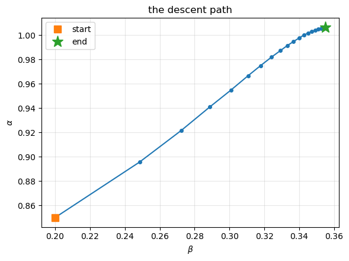
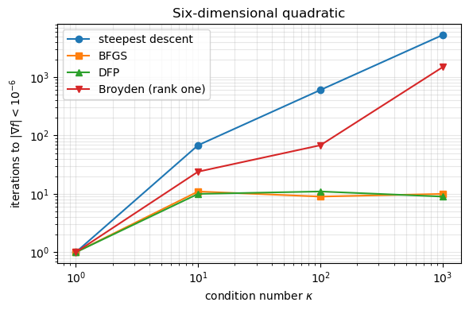
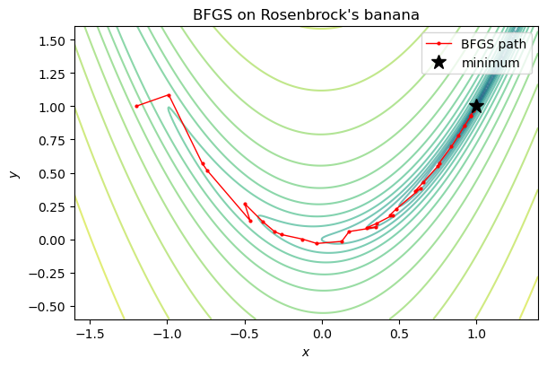
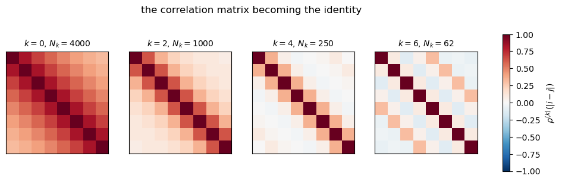
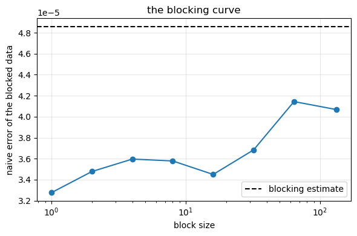
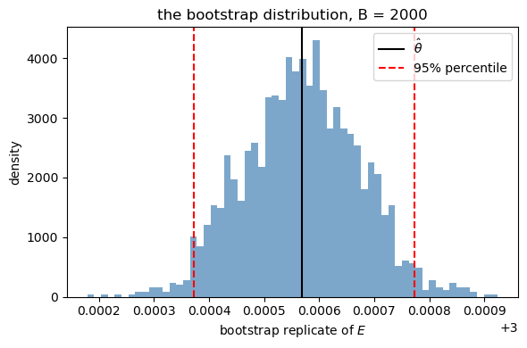
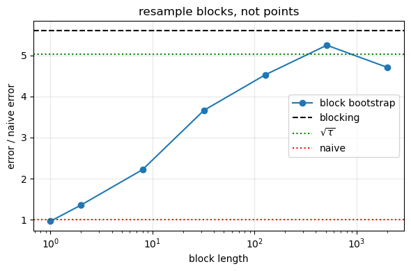

16. Optimization and resampling#
Executable companion to chapter 14.
Chapter 13 left two loose ends: the variational parameters were found by scanning a grid, and the error bar came from the autocorrelation time. Both are fixed here, in the three stages a real calculation has:
Optimise — the gradient of the energy is another Monte Carlo average, so it costs nothing extra. Short, noisy runs are enough while we are locating a minimum.
Produce — with the parameters fixed, run once with millions of samples.
Resample — the samples are correlated, so \(\sigma/\sqrt N\) is wrong. Blocking, bootstrap or jackknife give the honest error.
import sys
import sys, os, glob
# the chapter programs live in BookPrograms/chapterNN; put them all on the path
for _d in sorted(glob.glob(os.path.join("..", "BookManybody",
"BookPrograms", "chapter*"))):
if _d not in sys.path:
sys.path.insert(0, _d)
import math
import numpy as np
import matplotlib.pyplot as plt
import vmcoptimise as vo
from vmc import TAUT_ENERGY, correlation_time
16.1. 1. The gradient of the energy#
Write the energy as a Rayleigh quotient and differentiate. With \(A=\int \psi\,H\psi\) and \(B=\int\psi^2\), so that \(E=A/B\),
the second using the hermiticity of \(H\) — which is the one assumption of the whole derivation, and the reason no derivative of \(H\psi\) is ever needed. Substituting into the quotient rule and using \(A=EB\),
Now multiply and divide the integrands by \(\psi^2\). What is left outside is \(p(x)=\psi^2/\int\psi^2\), the density the Metropolis walk already samples, and inside are the local energy \(E_L=(H\psi)/\psi\) and the log-derivative \(O_\theta = (\partial_\theta\psi)/\psi = \partial_\theta\ln\psi\):
Three integrals — \(\langle O_\theta E_L\rangle\), \(\langle O_\theta\rangle\) and \(\langle E_L\rangle\) — all with respect to the same density, so one random walk delivers all of them. It needs only first derivatives of \(\ln\psi\), no derivatives of \(E_L\), and no extra sampling. For a complex \(\psi\) the same derivation gives $\partial_\theta E = 2,\Re\left(\langle O_\theta^{*}E_L\rangle
\langle O_\theta^{*}\rangle\langle E_L\rangle\right)$.
rng = np.random.default_rng(3)
worst = 0.0
for _ in range(40):
r = rng.normal(0.0, 1.0, (2, 2))
for a, b in ((0.98, 0.40), (0.80, 0.25), (1.10, 0.60)):
worst = max(worst, float(np.abs(vo.log_psi_gradient(r, a, b)
- vo.log_psi_gradient_fd(r, a, b)).max()))
print(f"d lnPsi/d(alpha,beta), analytic vs finite differences: {worst:.1e}")
d lnPsi/d(alpha,beta), analytic vs finite differences: 1.7e-09
print(f"{'alpha':>6s} {'beta':>6s} {'dE/da':>19s} {'dE/db':>19s}")
for a, b in ((0.90, 0.30), (1.00, 0.40), (1.05, 0.50)):
g = vo.sample(a, b, n_cycles=15000, rng=np.random.default_rng(99))["gradient"]
h, num = 0.01, np.empty(2)
for k, (da, db) in enumerate(((h, 0.0), (0.0, h))):
p = vo.sample(a+da, b+db, n_cycles=15000, rng=np.random.default_rng(99))["energy"]
m = vo.sample(a-da, b-db, n_cycles=15000, rng=np.random.default_rng(99))["energy"]
num[k] = (p - m)/(2*h)
print(f"{a:6.2f} {b:6.2f} {g[0]:9.5f} vs {num[0]:7.5f} "
f"{g[1]:9.5f} vs {num[1]:7.5f}")
print("\nThey agree within the noise — and the analytic route costs one run")
print("instead of four, with no cancellation of nearly equal numbers.")
alpha beta dE/da dE/db
0.90 0.30 -0.41045 vs -0.36418 -0.29194 vs -0.24605
1.00 0.40 0.02894 vs 0.02987 0.01222 vs 0.02174
1.05 0.50 0.21955 vs 0.21355 0.10397 vs 0.10863
They agree within the noise — and the analytic route costs one run
instead of four, with no cancellation of nearly equal numbers.
16.2. 2. Gradient descent#
\(\theta \leftarrow \theta - \eta\,\nabla_\theta E\), starting deliberately far from the minimum. Note the budget: 6000 cycles per step, far too few to report an energy but ample to decide which way is down.
theta, history = vo.gradient_descent(0.85, 0.20, learning_rate=0.05,
max_iter=20, n_cycles=4000)
print(f"{'iter':>5s} {'alpha':>9s} {'beta':>9s} {'energy':>12s} {'|grad|':>11s}")
for it, p, e, g, _ in history:
if it <= 4 or it % 5 == 0:
print(f"{it:5d} {p[0]:9.5f} {p[1]:9.5f} {e:12.6f} "
f"{np.linalg.norm(g):11.6f}")
print(f"\nconverged to alpha = {theta[0]:.4f}, beta = {theta[1]:.4f}")
path = np.array([h[1] for h in history])
plt.figure(figsize=(6, 4.5))
plt.plot(path[:, 1], path[:, 0], "o-", ms=4)
plt.plot(path[0, 1], path[0, 0], "s", ms=9, label="start")
plt.plot(path[-1, 1], path[-1, 0], "*", ms=14, label="end")
plt.xlabel(r"$\beta$"); plt.ylabel(r"$\alpha$")
plt.title("the descent path"); plt.legend(); plt.grid(alpha=0.3)
plt.tight_layout(); plt.show()
iter alpha beta energy |grad|
1 0.85000 0.20000 3.109414 1.330032
2 0.89561 0.24840 3.045335 0.705914
3 0.92159 0.27229 3.029706 0.507672
4 0.94097 0.28869 3.015757 0.367980
5 0.95482 0.30079 3.010026 0.308842
10 0.99137 0.33306 3.002619 0.098912
15 1.00313 0.34716 3.001162 0.042637
20 1.00632 0.35500 3.000192 0.029422
converged to alpha = 1.0067, beta = 0.3564

16.3. 3. Quasi-Newton methods: the secant condition, Broyden and BFGS#
Newton’s method for \(F(x)=0\) linearises, \(J_k s_k = -F(x_k)\), and needs the \(n\times n\) Jacobian at every step. Quasi-Newton methods never form it. From the step and the change in the function,
they require the new approximation to reproduce the observed change exactly — the secant condition \(B_{k+1}s_k = y_k\) — and fix the remaining \(n^2-n\) degrees of freedom by changing as little as possible.
16.3.1. Broyden: minimum change in the Frobenius norm#
With \(\|X\|_F^2 = \mathrm{Tr}(X^TX)\) (chapter 1) the Lagrangian is \(\mathrm{Tr}(\Delta B^T\Delta B) + 2\lambda^T(\Delta B s - r)\), and \(\partial\,\mathrm{Tr}(X^TX)/\partial X = 2X\) gives \(\Delta B = -\lambda s^T\) — rank one before anything else is imposed. The constraint fixes \(\lambda\):
the second being the same calculation for the inverse, \(H_{k+1}y_k = s_k\).
16.3.2. BFGS: symmetric, positive definite, rank two#
For minimisation the matrix approximates a Hessian, so it must also be symmetric and positive definite. A rank-one update cannot do that; a rank-two one can. With \(\rho = 1/(y^Ts)\) and \(V = I - \rho s y^T\),
Symmetry is manifest. \(V^Ty = y - \rho y(s^Ty) = 0\) gives the secant property \(H_{+}y = s\) in one line. And \(z^TH_{+}z = (V^Tz)^TH(V^Tz) + \rho(s^Tz)^2 > 0\) provided \(H\succ0\) and \(\rho>0\), i.e. provided the curvature condition \(s^Ty>0\) holds — which is exactly what the second Wolfe condition of the line search enforces. The line search is not a convenience; it is what keeps the curvature model well posed. Remember that when we come to the Monte Carlo case.
checks = vo.check_quasi_newton_algebra(n=5, n_trials=200)
labels = (("frobenius", "||A||_F^2 - Tr(A^T A)"),
("vectorisation", "vec(A).vec(B) - Tr(A^T B)"),
("broyden_secant", "Broyden: |B_new s - y|"),
("broyden_minimal","Broyden: minimality margin (must be >= 0)"),
("bfgs_secant", "BFGS: |H_new y - s|"),
("bfgs_symmetry", "BFGS: |H_new - H_new^T|"),
("bfgs_inverse", "BFGS: |B_new H_new - I|"),
("dfp_secant", "DFP: |H_new y - s|"))
for key, label in labels:
print(f"{label:<44s} {checks[key]:.2e}")
print(f"{'BFGS: smallest eigenvalue of H_new':<44s} "
f"{checks['bfgs_smallest_eigenvalue']:.2e}")
||A||_F^2 - Tr(A^T A) 1.07e-14
vec(A).vec(B) - Tr(A^T B) 3.55e-15
Broyden: |B_new s - y| 1.78e-15
Broyden: minimality margin (must be >= 0) 5.03e-01
BFGS: |H_new y - s| 3.74e-10
BFGS: |H_new - H_new^T| 2.33e-10
BFGS: |B_new H_new - I| 5.55e-08
DFP: |H_new y - s| 5.17e-14
BFGS: smallest eigenvalue of H_new 1.82e-03
The minimality line deserves a word. For each Broyden update the check builds random competitors
which satisfy the same secant condition because the projector annihilates \(s\), and confirms that none of them is closer to \(B_k\). The two pieces are orthogonal in the Frobenius inner product, so this is just Pythagoras — and it is why the answer had to be rank one.
16.3.3. Broyden against Newton on a nonlinear system#
\(F(x,y) = (x^2+y^2-4,\ e^x+y-1)\), from \((1,2)\). Newton uses the analytic Jacobian; Broyden starts from \(H_0 = I\) and uses none.
F = lambda v: np.array([v[0]**2 + v[1]**2 - 4.0, math.exp(v[0]) + v[1] - 1.0])
J = lambda v: np.array([[2*v[0], 2*v[1]], [math.exp(v[0]), 1.0]])
_, hn = vo.newton_root(F, J, [1.0, 2.0])
_, hb = vo.broyden_root(F, [1.0, 2.0])
print(f"{'iter':>5s} {'|F| Newton':>13s} {'|F| Broyden':>13s}")
for k in range(max(len(hn), len(hb))):
a = f"{hn[k][2]:13.3e}" if k < len(hn) else " " * 13
b = f"{hb[k][2]:13.3e}" if k < len(hb) else " " * 13
print(f"{k:5d} {a} {b}")
print(f"\nNewton: {len(hn)-1} iterations and {len(hn)-1} Jacobians.")
print(f"Broyden: {len(hb)-1} iterations and no Jacobian at all.")
iter |F| Newton |F| Broyden
0 3.850e+00 3.850e+00
1 3.443e+00 2.012e+00
2 4.891e+00 3.207e+00
3 7.506e-01 2.655e+00
4 3.093e-02 9.564e-01
5 5.919e-05 1.411e-01
6 2.185e-10 5.739e-02
7 0.000e+00 5.752e-03
8 4.092e-04
9 4.006e-06
10 6.036e-09
11 3.105e-11
Newton: 7 iterations and 7 Jacobians.
Broyden: 11 iterations and no Jacobian at all.
16.4. 4. Why curvature matters#
For a quadratic \(f = \tfrac12 x^TAx - b^Tx\), steepest descent with the optimal step obeys
so the iteration count grows linearly with the condition number even when the step length is chosen perfectly at every step. That is not a defect of the step size; it is a defect of the direction. The gradient alone cannot tell a narrow valley from a round bowl.
print(f"{'kappa':>8s} {'steepest':>10s} {'BFGS':>7s} {'DFP':>7s} "
f"{'Broyden':>9s} {'Powell':>8s}")
rows = []
for kappa in (1.0, 10.0, 100.0, 1000.0):
n = 6
diag = np.logspace(0.0, math.log10(kappa), n)
b = np.ones(n)
f = lambda x, d=diag, b=b: 0.5 * float(x @ (d * x)) - float(b @ x)
g = lambda x, d=diag, b=b: d * x - b
x0 = np.zeros(n)
counts = [len(vo.bfgs_minimise(f, g, x0, tol=1e-6, update=u,
max_iter=2000)[1]) - 1
for u in ("bfgs", "dfp", "broyden")]
sd = len(vo.steepest_descent_minimise(f, g, x0, tol=1e-6)[1]) - 1
pw = len(vo.powell_minimise(f, x0, tol=1e-12)[1]) - 1
rows.append((kappa, sd, *counts, pw))
print(f"{kappa:8.0f} {sd:10d} {counts[0]:7d} {counts[1]:7d} "
f"{counts[2]:9d} {pw:8d}")
kappa steepest BFGS DFP Broyden Powell
1 1 1 1 1 2
10 68 11 10 24 2
100 600 9 11 68 2
1000 5244 10 9 1478 5
fig, ax = plt.subplots(figsize=(6.0, 4.0))
kappas = [r[0] for r in rows]
for column, label, style in ((1, "steepest descent", "o-"),
(2, "BFGS", "s-"),
(3, "DFP", "^-"),
(4, "Broyden (rank one)", "v-")):
ax.loglog(kappas, [r[column] for r in rows], style, label=label)
ax.set_xlabel(r"condition number $\kappa$")
ax.set_ylabel("iterations to $|\\nabla f| < 10^{-6}$")
ax.set_title("Six-dimensional quadratic")
ax.grid(True, which="both", alpha=0.3)
ax.legend()
plt.tight_layout()
plt.show()

The two rank-two updates are flat: about ten iterations whether the problem is round or stretched by a factor of a thousand. That is what “learning the curvature” means in practice. Broyden’s rank-one update satisfies the secant condition but neither symmetry nor positive definiteness, and as a minimiser it degrades — it is a root finder being used for the wrong job.
Rosenbrock’s banana, which is not quadratic and has a curved valley, makes the same point more brutally.
rosen = lambda v: (1.0 - v[0])**2 + 100.0 * (v[1] - v[0]**2)**2
rosen_grad = lambda v: np.array([
-2.0 * (1.0 - v[0]) - 400.0 * v[0] * (v[1] - v[0]**2),
200.0 * (v[1] - v[0]**2)])
xb, hist_b = vo.bfgs_minimise(rosen, rosen_grad, [-1.2, 1.0], tol=1e-8)
xs, hist_s = vo.steepest_descent_minimise(rosen, rosen_grad, [-1.2, 1.0],
tol=1e-8)
xp, hist_p = vo.powell_minimise(rosen, [-1.2, 1.0], tol=1e-12, max_iter=500)
print(f"BFGS {len(hist_b)-1:6d} iterations f = {hist_b[-1][2]:.3e}")
print(f"steepest {len(hist_s)-1:6d} iterations f = {hist_s[-1][2]:.3e}")
print(f"Powell {len(hist_p)-1:6d} cycles f = {hist_p[-1][2]:.3e}")
path = np.array([h[1] for h in hist_b])
gx, gy = np.meshgrid(np.linspace(-1.6, 1.4, 300), np.linspace(-0.6, 1.6, 300))
gz = (1 - gx)**2 + 100 * (gy - gx**2)**2
fig, ax = plt.subplots(figsize=(6.2, 4.2))
ax.contour(gx, gy, np.log10(gz + 1e-12), levels=25, cmap="viridis", alpha=0.6)
ax.plot(path[:, 0], path[:, 1], "r.-", lw=1, ms=4, label="BFGS path")
ax.plot(1, 1, "k*", ms=12, label="minimum")
ax.set_xlabel("$x$"); ax.set_ylabel("$y$")
ax.set_title("BFGS on Rosenbrock's banana")
ax.legend()
plt.tight_layout()
plt.show()
BFGS 35 iterations f = 4.251e-21
steepest 19376 iterations f = 7.583e-17
Powell 500 cycles f = 2.174e-14

16.5. 5. Derivative-free optimisation: Powell’s method#
Sometimes there is no gradient — a black-box simulation, or one so noisy that a finite difference is meaningless. Powell’s method reduces the problem to a sequence of line minimisations,
solved by golden-section search: keeping the interior points at \(1 - 1/\varphi = 0.381966\ldots\) makes the surviving bracket self-similar, so one point is reused and each iteration costs a single function evaluation while shrinking the bracket by \(0.618\).
Why choose the directions carefully? On a quadratic, having minimised along \(d_i\) we have \(d_i^T\nabla f = 0\); moving along \(d_j\) changes the gradient by \(Ad_j\) times the step, so the first minimisation survives if and only if
the conjugacy condition of the conjugate gradient method. Powell’s insight is that conjugate directions can be generated from function values: minimise along each direction in turn, form the net displacement of the whole cycle \(d_{\rm new} = x_n - x_0\), and substitute it for the direction that helped most. On a quadratic the directions become conjugate and the method terminates in \(n\) cycles — which is the last column of the table above.
# Golden section on a one-dimensional slice
phi = lambda a: (a - 0.7)**2 + 0.3 * np.sin(6 * a)
grid = np.linspace(0.0, 1.5, 20001)
print(f"golden section: {vo.golden_section(phi, 0.0, 1.5, tol=1e-10):.8f}")
print(f"fine grid: {grid[np.argmin([phi(a) for a in grid])]:.8f}")
print("(golden section assumes phi is unimodal on the bracket; this phi has")
print(" several minima, so the bracket must be chosen with some care.)")
print()
# Powell's direction set on a badly scaled quadratic, cycle by cycle
diag = np.array([1.0, 1000.0])
f2 = lambda x: 0.5 * float(x @ (diag * x)) - float(np.ones(2) @ x)
xp, hp = vo.powell_minimise(f2, [-2.0, 2.0], tol=1e-10)
for it, x, fx, evals in hp[:6]:
print(f"cycle {it}: x = ({x[0]:9.5f}, {x[1]:9.6f}) f = {fx:12.8f} "
f"{evals} line minimisations")
print(f"\nexact minimum: x = (1, 0.001), f = {f2(1.0/diag):.8f}")
print(f"converged in {len(hp)-1} cycles with no derivatives at all")
golden section: 0.77204265
fine grid: 0.77205000
(golden section assumes phi is unimodal on the bracket; this phi has
several minima, so the bracket must be chosen with some care.)
cycle 0: x = ( -2.00000, 2.000000) f = 2002.00000000 0 line minimisations
cycle 1: x = ( 0.00100, 0.000000) f = -0.00099959 2 line minimisations
cycle 2: x = ( 1.00000, 0.001000) f = -0.50050000 4 line minimisations
cycle 3: x = ( 1.00000, 0.001000) f = -0.50050000 6 line minimisations
exact minimum: x = (1, 0.001), f = -0.50050000
converged in 3 cycles with no derivatives at all
Two warnings. A line minimisation locates the minimum of \(\phi\) only to \(O(\sqrt{\epsilon_{\rm mach}})\) in \(\alpha\), because \(\phi\) is quadratic there and a quadratic is flat at its minimum. And if \(f\) is noisy, golden section will happily converge on a fluctuation. Both objections apply with full force to variational Monte Carlo.
16.6. 6. Stochastic reconfiguration#
SR comes from a different direction entirely: not from approximating the Hessian of the energy, but from asking what imaginary-time evolution would do and doing as much of it as the variational manifold permits.
Imaginary time. \(|\Psi(\tau)\rangle = e^{-\tau H}|\Psi(0)\rangle = \sum_n c_n e^{-\tau E_n}|n\rangle \to c_0e^{-\tau E_0}|0\rangle\): every excited component is filtered out. We cannot follow it, because \((1-\delta\tau H)|\Psi(\alpha)\rangle\) does not lie on the manifold \(\mathcal{M} = \{|\Psi(\alpha)\rangle\}\). So take the step and project back.
The step. Use the shifted form \(|\Psi'_{\rm exact}\rangle = [1-\delta\tau(H-E)]|\Psi\rangle\). Since \(\langle\Psi|(H-E)|\Psi\rangle = 0\), this moves the state across the ray it lies on rather than along it — it changes the physics, not the norm.
The projection. Expand the variational side in the tangent vectors \(|\Psi_k\rangle = \partial_{\alpha_k}|\Psi\rangle\) and minimise the mismatch
\(\mathcal{D}\) is quadratic in \(\delta\alpha\), so stationarity is a linear system. Written with the normalised state (to remove the redundant component along \(|\Psi\rangle\)) and turned into Monte Carlo averages over \(P(x) = |\Psi(x)|^2/\langle\Psi|\Psi\rangle\), it becomes
Two readings. \(S\) is the covariance of the log-derivatives, hence symmetric and positive semidefinite, and singular exactly when the parameters are locally redundant. It is also the metric of the manifold: \(ds^2 = \sum_{ij}S_{ij}d\alpha_id\alpha_j\) is the squared distance between nearby normalised states — the quantum geometric tensor, four times the quantum Fisher information. Steepest descent in that metric is \(\delta\alpha \propto -S^{-1}g\), Amari’s natural gradient. Two derivations, one from imaginary-time projection and one from Riemannian geometry, giving the same update.
sr_report = vo.sr_metric_report(1.00, 0.40, n_cycles=40000)
S = sr_report["metric"]
print("S =")
print(S)
print(f"\neigenvalues {sr_report['eigenvalues']}")
print(f"condition number {sr_report['condition']:.1f}")
print(f"gradient {sr_report['gradient']}")
print()
print(f"{'lambda':>10s} {'|(S+lI)^-1 g|':>15s} {'angle to g (deg)':>18s}")
for lam, length, angle in sr_report["regularisation"]:
print(f"{lam:10.0e} {length:15.5f} {angle:18.2f}")
S =
[[0.64780165 0.28617337]
[0.28617337 0.22599836]]
eigenvalues [0.08140781 0.7923922 ]
condition number 9.7
gradient [0.02954761 0.01285379]
lambda |(S+lI)^-1 g| angle to g (deg)
1e-06 0.04654 25.97
1e-04 0.04652 25.95
1e-03 0.04636 25.71
1e-02 0.04492 23.52
1e-01 0.03747 12.52
1e+00 0.01803 2.16
1e+01 0.00299 0.23
\(S\) is positive semidefinite, and in a Monte Carlo estimate its small eigenvalues are the ones dominated by noise. Inverting it as it stands amplifies that noise without limit, so one shifts,
which is Tikhonov regularisation and interpolates: at \(\varepsilon\to0\) the natural gradient, at \(\varepsilon\to\infty\) plain steepest descent with learning rate \(\eta/\varepsilon\). The table shows the crossover — the step shortens and rotates back towards the bare gradient. Even with two parameters chosen by hand to do different things, the natural-gradient direction sits \(26^{\circ}\) away from the gradient.
For large \(p\) one never forms \(S\): \(Sv = \langle O(O\cdot v)\rangle - \langle O\rangle\langle O\cdot v\rangle\) costs one pass over the samples, and the system is solved by conjugate gradients. That is what makes SR practical for neural-network wave functions with millions of parameters.
16.7. 7. The methods compared on the quantum dot#
Same start, same budget per step. The last two rows are the informative ones.
print(f"{'method':>30s} {'steps':>6s} {'alpha':>9s} {'beta':>9s} "
f"{'final E':>12s}")
for name, routine, kw in (
("gradient descent", vo.gradient_descent, dict(learning_rate=0.05)),
("with momentum", vo.momentum_descent,
dict(learning_rate=0.03, momentum=0.6)),
("stochastic reconfiguration", vo.stochastic_reconfiguration,
dict(learning_rate=0.2))):
th, h = routine(0.85, 0.20, max_iter=15, n_cycles=4000, **kw)
print(f"{name:>30s} {len(h):6d} {th[0]:9.5f} {th[1]:9.5f} {h[-1][2]:12.6f}")
th, h, skipped = vo.bfgs_descent(0.85, 0.20, max_iter=15, n_cycles=4000)
print(f"{'BFGS, damped + trust radius':>30s} {len(h):6d} {th[0]:9.5f} "
f"{th[1]:9.5f} {h[-1][2]:12.6f}")
th2, h2, skipped2 = vo.bfgs_descent(0.85, 0.20, max_iter=15, n_cycles=4000,
damping=False, trust_radius=np.inf)
print(f"{'BFGS, no safeguards':>30s} {len(h2):6d} {th2[0]:9.5f} "
f"{th2[1]:9.5f} {h2[-1][2]:12.6f}")
th3, h3, calls = vo.powell_vmc(0.85, 0.20, n_cycles=4000, max_iter=3)
print(f"{'Powell, derivative free':>30s} {len(h3)-1:6d} {th3[0]:9.5f} "
f"{th3[1]:9.5f} {h3[-1][2]:12.6f}")
print()
print(f"BFGS rejected the curvature condition {skipped} times with the")
print(f"safeguards and {skipped2} times without; Powell used {calls} energy")
print("evaluations against 15 gradient evaluations, each of which also")
print("delivered the energy.")
method steps alpha beta final E
gradient descent 15 1.00411 0.34905 3.001162
with momentum 15 1.00817 0.37283 3.000559
stochastic reconfiguration 15 0.98820 0.39787 3.000394
BFGS, damped + trust radius 15 0.98807 0.39872 3.000381
BFGS, no safeguards 15 1.24115 271.08137 3.473468
Powell, derivative free 3 1.00554 0.36432 3.001191
BFGS rejected the curvature condition 0 times with the
safeguards and 7 times without; Powell used 100 energy
evaluations against 15 gradient evaluations, each of which also
delivered the energy.
Run BFGS on a Monte Carlo gradient the way one would run it on a deterministic function — no trust radius, no damped update — and it leaves the physical region. The reason is the one anticipated above: curvature is inferred from differences of gradients, and near the minimum, where the true difference is small, that difference is pure noise. The curvature condition \(s^Ty>0\) then fails, and the ordinary repair, a line search, is unavailable because we cannot reliably test whether the energy has decreased.
Powell’s method needs no gradient and does converge, but it spends an order of magnitude more energy evaluations to do it, and its line minimisations resolve fluctuations rather than curvature.
For two parameters the choice hardly matters. The reason to set them up carefully is what comes later: thousands of parameters, no grid conceivable, a non-convex surface, a stochastic gradient, and no line search. Of everything in this notebook, only a first-order update on the covariance gradient and stochastic reconfiguration survive that list.
16.8. 8. The production run#
Nothing left to decide, only statistics to accumulate — and that parallelises perfectly, since the walkers are independent.
run = vo.production_run(1.00, 0.40, n_walkers=1000, n_steps=2000,
time_step=0.5, rng=np.random.default_rng(2024))
series = run["series"]
print(f"{run['n_walkers']} walkers x {run['n_steps']} steps "
f"= {run['total_samples']:,} local-energy evaluations")
print(f"acceptance {run['acceptance']:.1%}, mean {series.mean():.8f}")
print(f"correlation time of the walker-averaged series "
f"{correlation_time(series):.2f}")
print("\nAveraging over independent walkers divides the variance and the")
print("autocovariance by the same factor, so tau is unchanged — the error")
print("analysis of chapter 12 is still needed.")
1000 walkers x 2000 steps = 2,000,000 local-energy evaluations
acceptance 87.1%, mean 3.00054858
correlation time of the walker-averaged series 1.27
Averaging over independent walkers divides the variance and the
autocovariance by the same factor, so tau is unchanged — the error
analysis of chapter 12 is still needed.
16.10. 10. Blocking, and what it does to \(\Sigma\)#
Blocking is a linear coarse-graining, so \(\Sigma^{(k)}\) is again Toeplitz, and each step moves weight from the off-diagonals onto the diagonal. Once the blocks are longer than the correlation time,
the exact formula collapses to the independent-sample \(s_k^2/N_k\), and the estimate stops rising. That plateau is the whole method. Watch it happen on the badly tuned run, where there is something to see.
bad = vo.production_run(1.00, 0.40, n_walkers=400, n_steps=4000,
time_step=0.02, rng=np.random.default_rng(2024))
print(f"{'k':>3s} {'N_k':>7s} {'s_k^2':>12s} {'rho(1)':>8s} {'rho(2)':>8s} "
f"{'rho(3)':>8s} {'sqrt(s_k^2/N_k)':>16s}")
levels = vo.blocked_covariance(bad["series"], levels=6)
for k, nk, var_k, rho in levels:
print(f"{k:3d} {nk:7d} {var_k:12.3e} {rho[0,1]:8.4f} {rho[0,2]:8.4f} "
f"{rho[0,3]:8.4f} {math.sqrt(var_k/nk):16.8f}")
fig, axes = plt.subplots(1, 4, figsize=(11, 3.0))
for ax, (k, nk, var_k, rho) in zip(axes, levels[::2]):
im = ax.imshow(rho, vmin=-1, vmax=1, cmap="RdBu_r")
ax.set_title(f"$k={k}$, $N_k={nk}$", fontsize=10)
ax.set_xticks([]); ax.set_yticks([])
fig.colorbar(im, ax=axes, fraction=0.02, label=r"$\rho^{(k)}(|i-j|)$")
fig.suptitle("the correlation matrix becoming the identity", y=1.04)
plt.show()
k N_k s_k^2 rho(1) rho(2) rho(3) sqrt(s_k^2/N_k)
0 4000 4.561e-06 0.8242 0.6869 0.5801 0.00003377
1 2000 4.169e-06 0.7589 0.5402 0.3979 0.00004566
2 1000 3.683e-06 0.6310 0.3473 0.2211 0.00006069
3 500 3.023e-06 0.4635 0.1912 0.1267 0.00007776
4 250 2.166e-06 0.3517 0.0593 -0.0235 0.00009309
5 125 1.519e-06 0.1573 0.0041 0.0391 0.00011023
6 62 9.190e-07 0.0869 -0.1125 0.0539 0.00012175

16.10.1. The three estimators side by side#
Blocking with Jonsson’s stopping rule, the block bootstrap and the block jackknife, on the well-tuned run and on the badly tuned one. The plateau of the blocking curve below is the same plateau as the last column of the table above, plotted rather than tabulated.
def report(x, label):
naive = x.std(ddof=1)/math.sqrt(len(x))
tau = correlation_time(x)
_, eb, k = vo.blocking(x)
_, ebo, bb = vo.bootstrap(x, n_resamples=1000, rng=np.random.default_rng(7))
_, ej, bj = vo.jackknife(x)
print(f"{label}")
print(f" correlation time tau {tau:8.2f}")
print(f" naive sigma/sqrt(N) {naive:.8f}")
print(f" sqrt(tau) x naive {naive*math.sqrt(tau):.8f}")
print(f" blocking {eb:.8f} ({k} transformations)")
print(f" bootstrap, blocks of {bb:<4d} {ebo:.8f}")
print(f" jackknife, blocks of {bj:<4d} {ej:.8f}")
print(f" resampled / naive {eb/naive:8.2f}")
return eb
error = report(series, "well tuned, time step 0.5:")
print()
# `bad` is the badly tuned run built in the previous cell
report(bad["series"], "badly tuned, time step 0.02:")
print()
print("With good sampling the naive estimate is only modestly wrong — but")
print("there is no way to know that without measuring. With bad sampling it")
print("is wrong by a factor of four, silently.")
well tuned, time step 0.5:
correlation time tau 1.27
naive sigma/sqrt(N) 0.00003276
sqrt(tau) x naive 0.00003690
blocking 0.00004858 (1 transformations)
bootstrap, blocks of 2 0.00003486
jackknife, blocks of 2 0.00003478
resampled / naive 1.48
badly tuned, time step 0.02:
correlation time tau 13.95
naive sigma/sqrt(N) 0.00003377
sqrt(tau) x naive 0.00012614
blocking 0.00015405 (5 transformations)
bootstrap, blocks of 27 0.00010611
jackknife, blocks of 27 0.00010427
resampled / naive 4.56
With good sampling the naive estimate is only modestly wrong — but
there is no way to know that without measuring. With bad sampling it
is wrong by a factor of four, silently.
curve = vo.blocking_curve(series)
plt.figure(figsize=(6, 4))
plt.semilogx([len(series)//n for n, _ in curve], [e for _, e in curve], "o-")
plt.axhline(error, ls="--", color="k", label="blocking estimate")
plt.xlabel("block size"); plt.ylabel("naive error of the blocked data")
plt.title("the blocking curve"); plt.legend(); plt.grid(alpha=0.3)
plt.tight_layout(); plt.show()

16.11. 11. The bootstrap, properly#
Suppose the data come from an unknown \(F\) and we want the sampling distribution of some estimator \(\hat\theta = f(X_1,\dots,X_N)\). If we knew \(F\) we would simply repeat the experiment. We do not — but we have the empirical distribution
which converges to \(F\) by Glivenko–Cantelli. The plug-in principle says: do exactly what you would have done with \(F\), using \(\hat F_N\) instead. Sampling from \(\hat F_N\) is resampling with replacement.
For \(b = 1,\dots,B\) draw \(X_1^*,\dots,X_N^*\) and compute \(\hat\theta_b^*\). Then
and the percentile interval at confidence \(1-\alpha\) is just the \(\alpha/2\) and \(1-\alpha/2\) quantiles of the replicates — no normality assumed anywhere. The justification is that \(\sqrt N(\hat\theta^*-\hat\theta)\), under resampling with the data held fixed, has the same limiting distribution as \(\sqrt N(\hat\theta-\theta)\) does under repetition of the experiment.
One assumption, which Monte Carlo data violate: resampling single points assumes the points are exchangeable. They are not. Resample blocks.
chain = vo.sample(1.00, 0.40, n_cycles=200000, time_step=0.5,
rng=np.random.default_rng(31), keep_samples=True)
e_local = chain["samples"]
tau_chain = correlation_time(e_local)
n_blocks = 200
block = len(e_local) // n_blocks
print(f"{len(e_local):,} local energies, tau = {tau_chain:.2f}, "
f"{n_blocks} blocks of {block}")
print(f"each block is {block/tau_chain:.0f} correlation times long")
boot = vo.block_bootstrap(e_local, n_resamples=2000, n_blocks=n_blocks,
rng=np.random.default_rng(5))
low, high = boot["interval"]
print(f"\nE {boot['estimate']:.6f}")
print(f"bootstrap error {boot['error']:.6f}")
print(f"95% percentile [{low:.6f}, {high:.6f}]")
print(f"+/- 1.96 sigma [{boot['estimate']-1.96*boot['error']:.6f}, "
f"{boot['estimate']+1.96*boot['error']:.6f}]")
r = boot["samples"]
plt.figure(figsize=(6, 4))
plt.hist(r, bins=60, density=True, alpha=0.7, color="steelblue")
plt.axvline(boot["estimate"], color="k", label=r"$\hat\theta$")
plt.axvline(low, color="r", ls="--", label="95% percentile")
plt.axvline(high, color="r", ls="--")
plt.xlabel("bootstrap replicate of $E$"); plt.ylabel("density")
plt.title(f"the bootstrap distribution, B = {len(r)}")
plt.legend(); plt.tight_layout(); plt.show()
print(f"skewness of the replicates {float(np.mean((r-r.mean())**3)/r.std()**3):+.3f}"
" (Gaussian, so the two intervals agree)")
200,000 local energies, tau = 1.25, 200 blocks of 1000
each block is 799 correlation times long
E 3.000569
bootstrap error 0.000105
95% percentile [3.000373, 3.000773]
+/- 1.96 sigma [3.000362, 3.000775]

skewness of the replicates +0.013 (Gaussian, so the two intervals agree)
16.12. 12. Estimators that are not means#
Blocking gives the error on a mean and on nothing else. The natural non-linear estimator in VMC is the variance of the local energy: by the zero-variance argument it vanishes when \(\Psi_T\) is an exact eigenstate, so it measures directly how far we are from one — and no formula for its error exists.
print(f"{'estimator':>20s} {'value':>11s} {'bootstrap':>11s} "
f"{'jackknife':>11s} {'blocking':>11s} {'jack bias':>11s}")
for name, est in (("mean, E", np.mean),
("variance sigma^2", np.var),
("sigma", lambda a: float(np.std(a))),
("ratio sigma / |E|",
lambda a: float(np.std(a)/abs(np.mean(a))))):
b = vo.block_bootstrap(e_local, estimator=est, n_resamples=1000,
n_blocks=n_blocks, rng=np.random.default_rng(11))
j = vo.block_jackknife(e_local, estimator=est, n_blocks=n_blocks)
blk = f"{vo.blocking(e_local)[1]:11.6f}" if est is np.mean else f"{'--':>11s}"
print(f"{name:>20s} {b['estimate']:11.6f} {b['error']:11.6f} "
f"{j['error']:11.6f} {blk} {j['bias']:+11.2e}")
estimator value bootstrap jackknife blocking jack bias
mean, E 3.000569 0.000105 0.000105 0.000142 +8.84e-14
variance sigma^2 0.002195 0.000013 0.000014 -- -1.09e-08
sigma 0.046851 0.000143 0.000144 -- -3.39e-07
ratio sigma / |E| 0.015614 0.000048 0.000048 -- -1.12e-07
Two things in the last column. The jackknife bias for the mean is \(10^{-13}\), that is, zero — and it has to be: for a linear estimator every leave-one-out value is an exact rearrangement of the same numbers, so there is nothing for the correction to find. Bias is a phenomenon of non-linear estimators.
And for the variance there is a known answer to check against: np.var uses
\(1/N\), which is biased low by exactly \(-\sigma^2/N\).
bv = vo.block_bootstrap(e_local, estimator=np.var, n_resamples=1000,
n_blocks=n_blocks, rng=np.random.default_rng(11))
jv = vo.block_jackknife(e_local, estimator=np.var, n_blocks=n_blocks)
print(f"sigma^2, the 1/N estimator {bv['estimate']:.8f}")
print(f"exact bias, -sigma^2 / N {-bv['estimate']/len(e_local):+.3e}")
print(f"jackknife bias estimate {jv['bias']:+.3e}")
print(f"bootstrap bias estimate {bv['bias']:+.3e}")
print(f"jackknife bias-corrected {jv['corrected']:.8f}")
print(f"the 1/(N-1) estimator {float(np.var(e_local, ddof=1)):.8f}")
print()
print("The jackknife gets the bias to three digits knowing nothing about")
print("what it is estimating. The bootstrap estimate is an order of")
print("magnitude too large -- a bias of 1e-8 read off B = 1000 replicates")
print("each carrying an error of 1e-5 is noise. Bias estimation needs a far")
print("larger B than error estimation, and the jackknife, being")
print("deterministic, does not have the problem at all.")
sigma^2, the 1/N estimator 0.00219502
exact bias, -sigma^2 / N -1.098e-08
jackknife bias estimate -1.094e-08
bootstrap bias estimate -1.995e-07
jackknife bias-corrected 0.00219503
the 1/(N-1) estimator 0.00219503
The jackknife gets the bias to three digits knowing nothing about
what it is estimating. The bootstrap estimate is an order of
magnitude too large -- a bias of 1e-8 read off B = 1000 replicates
each carrying an error of 1e-5 is noise. Bias estimation needs a far
larger B than error estimation, and the jackknife, being
deterministic, does not have the problem at all.
16.12.1. Why the blocks matter#
Resampling single points produces data sets that are independent by construction, whatever the original looked like, and returns \(\sigma^2/N\) — the naive answer, with every appearance of a careful calculation. The effect is invisible when \(\tau\approx1\), so here is a deliberately sticky chain.
sticky = vo.sample(1.00, 0.40, n_cycles=200000, time_step=0.02,
rng=np.random.default_rng(31), keep_samples=True)
e_sticky = sticky["samples"]
tau_s = correlation_time(e_sticky)
naive_s = e_sticky.std(ddof=1)/math.sqrt(len(e_sticky))
print(f"tau = {tau_s:.1f}, so the honest error should be about "
f"sqrt(tau) = {math.sqrt(tau_s):.1f} x naive\n")
lengths, ratios = [], []
print(f"{'block length':>14s} {'bootstrap error':>18s} {'/ naive':>10s}")
for b in (1, 2, 8, 32, 128, 512, 2000):
out = vo.block_bootstrap(e_sticky, n_resamples=200, block=b,
rng=np.random.default_rng(3))
lengths.append(b); ratios.append(out["error"]/naive_s)
print(f"{b:14d} {out['error']:18.8f} {out['error']/naive_s:10.2f}")
_, bs, _ = vo.blocking(e_sticky)
print(f"{'blocking':>14s} {bs:18.8f} {bs/naive_s:10.2f}")
plt.figure(figsize=(6, 4))
plt.semilogx(lengths, ratios, "o-", label="block bootstrap")
plt.axhline(bs/naive_s, ls="--", color="k", label="blocking")
plt.axhline(math.sqrt(tau_s), ls=":", color="g", label=r"$\sqrt{\tau}$")
plt.axhline(1.0, ls=":", color="r", label="naive")
plt.xlabel("block length"); plt.ylabel("error / naive error")
plt.title("resample blocks, not points")
plt.legend(); plt.grid(alpha=0.3); plt.tight_layout(); plt.show()
tau = 25.3, so the honest error should be about sqrt(tau) = 5.0 x naive
block length bootstrap error / naive
1 0.00010123 0.96
2 0.00014264 1.36
8 0.00023298 2.22
32 0.00038435 3.66
128 0.00047516 4.53
512 0.00055047 5.24
2000 0.00049401 4.71
blocking 0.00058775 5.60

16.12.2. Which to use#
The mean of a Monte Carlo run — blocking with Jonsson’s rule. No free parameters, no window, conservative.
Anything else — a variance, a ratio, a fitted or extrapolated parameter: block bootstrap or block jackknife. They agree when both apply; the jackknife is deterministic and cheaper, the bootstrap gives the whole distribution and hence confidence intervals.
Bias — the jackknife, or the bootstrap with a large \(B\).
Never \(\sigma/\sqrt N\) from a Markov chain, and never a bootstrap that resamples single points. Both are wrong in the same direction and neither announces itself.
16.13. 13. The result#
mean = series.mean()
print(f"E = {mean:.6f} +/- {error:.6f}\n")
print(f"{'method':<28s} {'energy':>12s} {'error':>10s}")
for label, value in (("Hartree-Fock, 42 orbitals", 3.161921),
("MP2, 42 orbitals", 3.027038),
("CCSD, 42 orbitals", 3.013626),
("VMC, this chapter", mean),
("exact (Taut)", TAUT_ENERGY)):
print(f"{label:<28s} {value:12.6f} {abs(value-TAUT_ENERGY):10.1e}")
gap = mean - TAUT_ENERGY
naive = series.std(ddof=1)/math.sqrt(len(series))
print(f"\nThe remaining {gap:.6f} is {gap/error:.0f} standard errors wide, and it")
print("is not statistical — it is what two parameters cannot represent.")
print(f"With the naive error one would have quoted {gap/naive:.0f} standard errors")
print("and concluded, wrongly, that something was broken.")
E = 3.000549 +/- 0.000049
method energy error
Hartree-Fock, 42 orbitals 3.161921 1.6e-01
MP2, 42 orbitals 3.027038 2.7e-02
CCSD, 42 orbitals 3.013626 1.4e-02
VMC, this chapter 3.000549 5.5e-04
exact (Taut) 3.000000 0.0e+00
The remaining 0.000549 is 11 standard errors wide, and it
is not statistical — it is what two parameters cannot represent.
With the naive error one would have quoted 17 standard errors
and concluded, wrongly, that something was broken.
16.14. What is left#
Every result here is bounded above by what two parameters can express, and no amount of sampling or optimisation changes that. Two ways out:
Diffusion Monte Carlo removes the dependence on \(\Psi_T\) by projecting onto the ground state in imaginary time, using the drift and Green’s function of chapter 13.
If the trouble is that we cannot guess a good enough functional form, the alternative is not to guess: parametrise \(\Psi_T\) by a neural network and let the gradient and the stochastic-reconfiguration step do the rest.